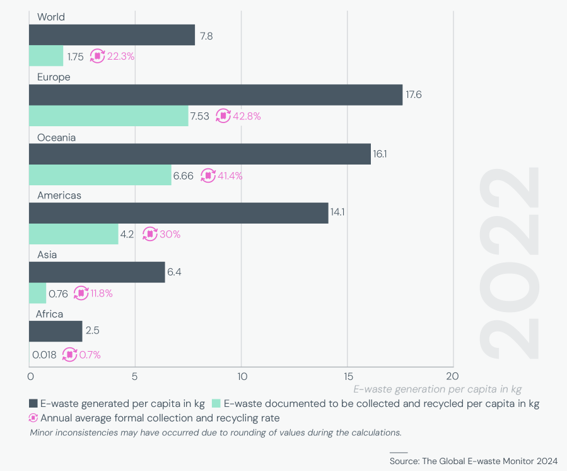

L'any 2022 es van generar 62 milions de tones mètriques de residus i aparells elèctrics i electrònics (RAEE) en tot el món, completant un seguit de dades que es venen recollint des del 2010. Aquesta xifra augmenta any rere any degut al progrés tecnològic, l'increment en el consum, cicles de vida curts i poques opcions de reparació.
Potser encara més alarmant és que ho fa a un ritme cinc vegades superior al que augmenta la recol·lecció i el reciclatge d'aquests residus, que se situa formalment en un 22.2%. Cal afegir que aquest percentatge encara està lluny de la meta del 30% establerta per la Unió Internacional de Telecomunicacions (ITU) pel 2030.
A on es produeixen més residus?
Les diferències regionals són bastant clares. La majoria de RAEE es generen en els continents més desenvolupats, amb Europa al capdavant. Aquesta regió genera 17.6 kg per càpita i assoleix una taxa de reciclatge del 42.8%. Seguidament hi trobem Oceania (16.1 kg), les Amèriques (14.1 kg) i Àsia (6.4 kg). Per contra, Àfrica es troba a la cua amb 2.5 kg per càpita i una taxa de reciclatge de només el 0.7%.

D'altra banda, val a dir que són també els continents més desenvolupats els que recol·lecten i reciclen més volum, demostrant una correlació directa entre el desenvolupament econòmic, el consum tecnològic i les infraestructures de gestió de residus.
El cost (o benefici) de reciclar
La despesa econòmica total anual de la gestió de RAEE s'estima en 37.000 milions de dòlars arreu del món. Tot i que pugui semblar una despesa inassumible que dissuadeix les institucions a legislar en aquesta direcció, cal tenir en compte que amb una millor gestió i reciclatge dels residus aquesta despesa podria arribar a ser compensada per complet.
Per posar un exemple clarificador, el valor dels metalls continguts en els RAEE generats l'any 2022 s'estima en 91.000 milions de dòlars, dels quals actualment se'n recuperen només pel valor de 28.000 milions de dòlars. Hi ha un gran marge per convertir el repte en una oportunitat econòmica.
Què s'està fent per millorar?
La legislació específica respecte a la gestió dels RAEE s'adopta cada vegada a més països i és essencial per millorar-la, a més de regular l'exportació d'aquests residus i evitar la seva acumulació a certes zones del planeta, on després poden causar grans problemes sanitaris i ambientals.
Els estudis confirmen l'efectivitat d'aquesta eina, situant els percentatges de recol·lecció dels països amb legislació específica (81 països el 2023) molt més elevats que els que no en tenen, que solen ser aquells en zones menys desenvolupades del planeta. Tot i això, són menys els que fan passos més decisius establint objectius clars cap als quals avançar i monitorant efectivament els progressos en aquesta direcció.
Quines són les dades de Catalunya?
Centrant-nos en l'àmbit local, l'any 2023 s'estima que es van generar més de 103.100 tones de RAEE a Catalunya (en el cas més conservador), de les quals se'n van recollir 56.400, representant un 54.7%. Això suposa menys generació i més percentatge de reciclatge per habitant que la mitjana europea, situant-nos en una posició relativament positiva dins del context global.
Referències i fonts:
- Ministeri per a la Transició Ecològica i el Repte Demogràfic (MITECO) - Memòria anual de generació i gestió de residus (RAEE): https://www.miteco.gob.es/ca/calidad-y-evaluacion-ambiental/publicaciones/memoria-anual-generacion-gestion-residuos.html#residuos-de-aparatos-electricos-y-electronicos
- Unió Internacional de Telecomunicacions (ITU) - The Global E-waste Monitor 2024: https://www.itu.int/en/ITU-D/Environment/Pages/Publications/The-Global-E-waste-Monitor-2024.aspx